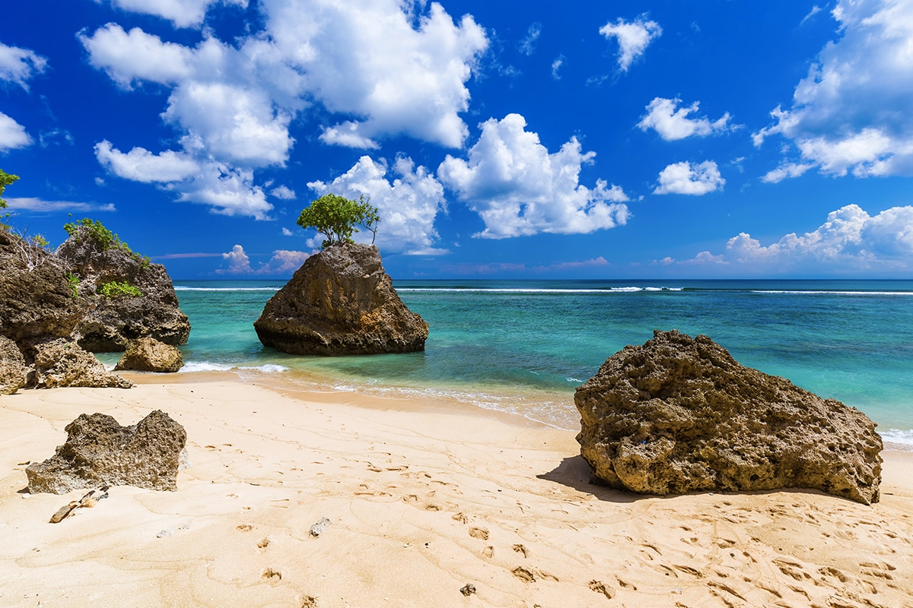
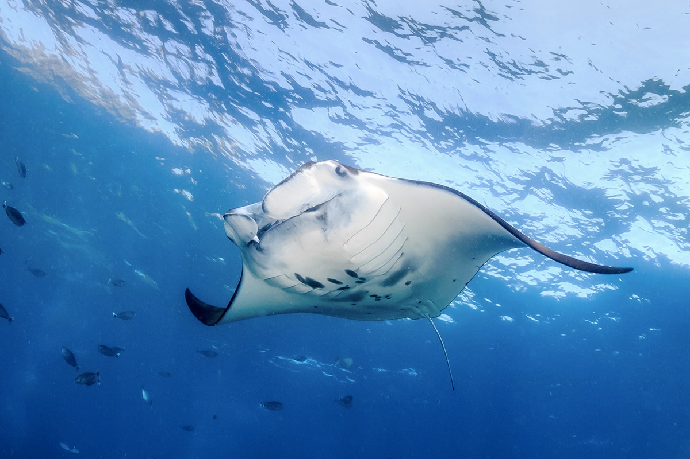
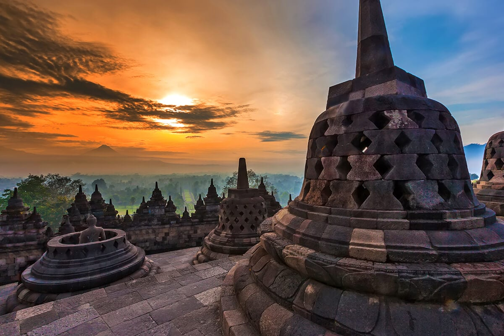
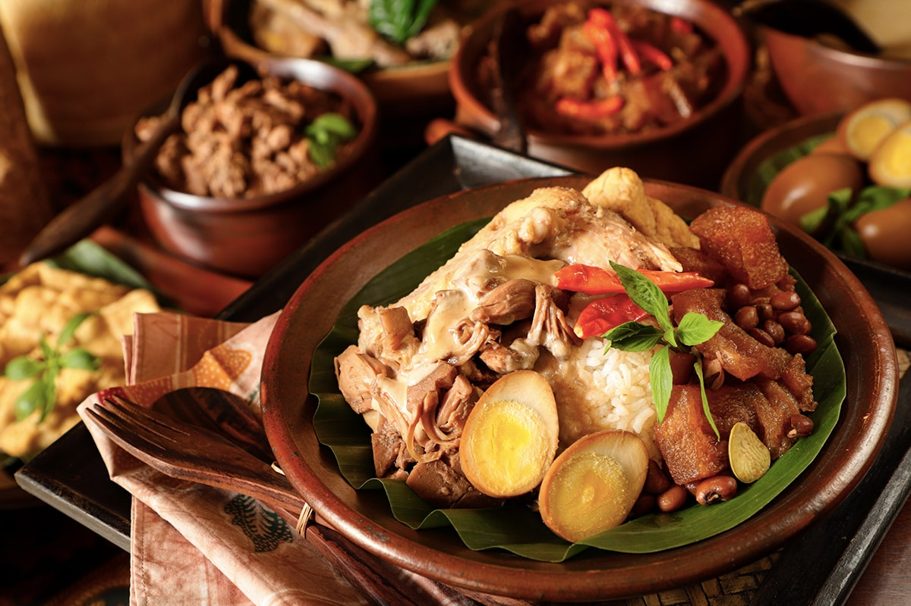
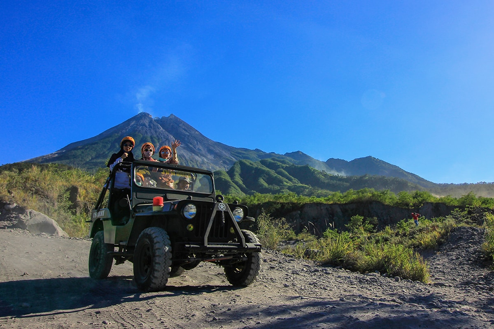
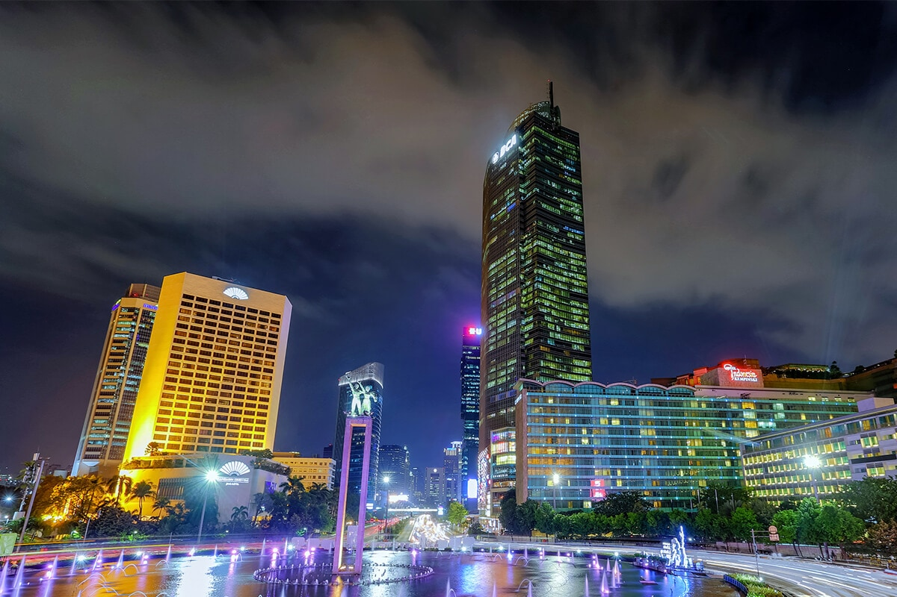
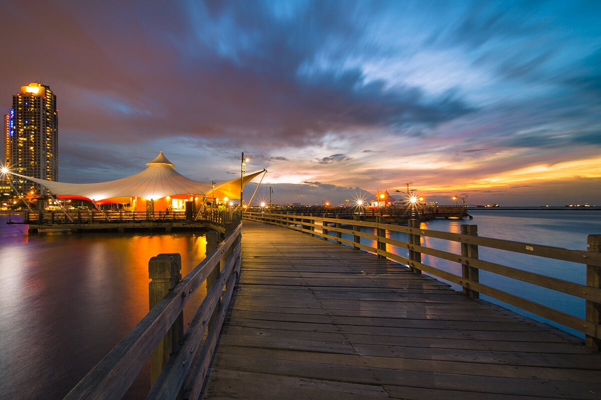

Bali
Siapa pun tak ada yang bisa menyangkal keindahan yang ditawarkan Pulau Dewata. Baru-baru ini, Bali didapuk menjadi destinasi paling populer di dunia versi Tripadvisor Travellers’ Choice tahun 2021. Tentu saja, bentangan alamnya yang indah berpadu sempurna dengan kearifan lokalnya yang istimewa menjadikan Bali sebagai destinasi #DiIndonesiaAja yang patut Sobat kunjungi setidaknya sekali seumur hidup!
Daya tarik utama Pulau Bali tentu saja terdapat pada wisata pantainya. Hampir semua wisatawan yang berlibur di Bali memasukkan pantai ke dalam daftar kunjungannya. Deretan pantai yang ada di Bali punya keunikan dan pesonanya tersendiri, lho!
Salah satu pantai yang paling populer di Bali adalah Pantai Kuta. Pantai berpasir putih ini terkenal berkat ombaknya yang besar sekaligus menjadi surga bagi para peselancar. Karena lokasinya yang strategis, berbagai hotel, restoran, toko, dan kafe juga dapat dengan mudah Sobat Pesona temukan di sepanjang jalan Pantai Kuta.
Jika Sobat Pesona lebih suka suasana pantai yang tenang, datang saja ke berbagai pilihan pantai tersembunyi yang ada di selatan Pulau Bali! Sebut saja Pantai Balangan, Pantai Dreamland, Pantai Melasti, dan deretan pantai lainnya yang masih relatif sepi.
Lain halnya jika Sobat Pesona ingin menjajal sensasi berselancar atau menyelam di lautan lepas. Sobat Pesona bisa datang ke tiga pulau di sebelah tenggara Pulau Bali, yaitu Nusa Lembongan, Nusa Ceningan, dan Nusa Penida. Para peselancar dari seluruh penjuru dunia datang ke tiga kawasan ini untuk menaklukan ombaknya yang menantang.
Jangan lewatkan juga mengunjungi Manta Point dan Malibu Point di bagian barat daya Pantai Nusa Penida! Selama berada di sini, Sobat Pesona berkesempatan untuk merasakan sensasi menyelam dan berenang beriringan bersama ikan pari manta hingga hiu, lho! Menarik banget, kan? Nah, setelah puas menguji adrenalin, saatnya segarkan kembali matamu dengan suguhan surgawi yang ditawarkan Nusa Penida melalui deretan pantainya yang indah, seperti Pantai Kelingking, Pantai Atuh, dan Broken Beach!
Yogyakarta
Kota budaya dengan berbagai situs bersejarah seperti Candi Borobudur dan Candi Prambanan.
Yogyakarta adalah asal mula peradaban di Tanah Jawa. Kota ini pernah menjadi singgasana yang menghasilkan Candi Borobudur and Prambanan yang begitu megah pada abad ke-8 dan ke-9 serta tempat berkuasanya kerajaan Mataram pada abad ke-16 dan ke-17.
Yogyakarta pernah dikenal dengan slogannya yang berbunyi “Jogja The Neverending Asia“ berkat daya tariknya yang luar biasa. Sekarang, kota ini juga dikenal sebagai “Jogja Istimewa“ karena nilai-nilainya yang dianut begitu eloknya.
Kota ini adalah salah satu dari beberapa pusat kebudayaan di Indonesia. Setiap pengunjung bisa menjelajahinya dengan berjalan-jalan di Museum Keraton (Istana Sultan), bercengkrama di Alun Alun Kota, melihat proses pembuatan perhiasan di Kotagede, sampai berbelanja di Malioboro.
Keajaiban Warisan Sejarah
Sobat Pesona dapat merasakan lima keajaiban di kota yang sangat "nyeni" ini. Mulai dari menikmati keajaiban alam dengan mengunjungi pantai sampai berpetualang ke lanskap elok lainnya. Pantai Parangtritis, Indrayanti, Pok Tunggal, Siung, Krakal, dan Jogan adalah beberapa pantai yang terkenal di kota ini. Titik-titik pemandangan menarik bisa Sobat Pesona temukan di Puncak Becici, Pinus Pengger, dan Jurang Tembelan. Ini hanyalah sebagian kecil dari begitu banyak lagi daya tarik alam yang bisa Sobat Pesona telusuri di Yogyakarta!
Untuk menikmati keajaiban kulinernya, jangan lupa untuk mencoba Gudeg, racikan istimewa dari resep tradisional Jawa yang telah menjadi ciri khas kota ini. Jangan lupa cicipi juga Bakpia, cemilan tradisional dengan banyak rasa menarik yang populer sebagai cinderamata. Untuk minumannya, Sobat Pesona dapat mencoba Jamu, minuman tradisional campuran berbagai macam tumbuhan berkhasiat yang sering digunakan untuk pengobatan alamiah.
Batik adalah warisan bangsa yang namanya berasal dari bahasa Jawa, “amba” dan “titik”, yang berarti menulis titik-titik. Secara hakikatnya, Batik merupakan seni menghias kain dengan menggunakan lilin dan pewarna. Yogyakarta memiliki pola khas Batik yang biasanya dibuat dengan latar belakang putih terang. Beberapa diantaranya adalah motif Parang Kusumo, Kawung, dan Truntum. Setiap motif dibuat dengan filosofi istimewa yang terletak di setiap guratannya.
Terdapat beberapa jenis Batik dilihat dari teknik pembuatanya, yaitu Batik Tulis, Batik Cap, Batik Print, serta hasil gabungan dari ketiga teknik tersebut. Batik paling mahal adalah Batik Tulis, yang 100% dibuat dengan keterampilan tangan manusia. Harga Batik Tulis akan menjadi lebih mahal bila dibuat dari kain sutra. Membuat Batik Tulis dengan kualitas cemerlang dapat memakan waktu produksi dari seharian penuh hingga berbulan-bulan proses, tergantung dari ukuran dan tingkat kesulitan rancangannya.
Banyak juga petualangan yang bisa kamu rasakan di Yogyakarta. Mulai dari mendaki Taman Nasional Gunung Merapi, serunya naik jeep sepanjang jalur pendakian, dan mendaki Gunung Nglanggeran, sebuah gunung berapi kuno yang berlokasi di sebuah desa yang indah.
Jakarta
Jakarta adalah ibu kota Republik Indonesia. Jakarta adalah kota metropolitan yang besar dan luas, rumah bagi lebih dari 10 juta orang dengan latar belakang kelompok etnis yang beragam dari seluruh Indonesia. Pada siang hari, jumlah tersebut meningkat karena para komuter berangkat kerja di kota dan berbondong-bondong keluar lagi di malam hari.
Terletak di barat laut Pulau Jawa, provinsi DKI Jakarta telah berkembang pesat selama bertahun-tahun, menyerap banyak desa dalam prosesnya. Faktanya, Jakarta adalah konglomerasi desa yang dikenal sebagai kampung , sekarang dilintasi oleh jalan utama dan jalan raya super.
Pesona Kota Metropolitan
Salah satu pengalaman lokal adalah Anda mungkin berkendara di satu jalan lebar dalam satu menit, lalu tiba-tiba menemukan diri Anda terjepit di jalan kecil bersama puluhan mobil dan sepeda motor. Dengan banyaknya daerah pinggiran kota, Jakarta telah menjadi kota Megapolitan . Oleh karena itu, saat Anda mengunjungi Jakarta, sebaiknya Anda berinvestasi dalam peta yang bagus atau mengandalkan GPS untuk bernavigasi.
Jakarta bukan hanya pusat pemerintahan nasional dan provinsi, tetapi juga pusat politik Indonesia. Selain itu, Jakarta juga merupakan pusat keuangan dan perdagangan nasional Indonesia. Tidak mengherankan, jika Anda akan menemukan Jakarta sebagai kota yang dinamis, dengan berbagai aktivitas yang berlangsung sepanjang waktu di seluruh wilayahnya.
Kota ini terbagi menjadi 5 distrik, yaitu Jakarta Pusat, Jakarta Utara, Jakarta Barat, Jakarta Timur, dan Jakarta Selatan . Istilah 'Jabodetabek' mengacu pada Jakarta-Bogor-Depok-Tangerang-Bekasi - wilayah Jabodetabek terdiri dari kota-kota besar di sekitar ibu kota. Jakarta Pusat atau Jakarta pusat adalah tempat Anda dapat menemukan landmark ikonik seperti Monas, Istana Merdeka , Museum Nasional , Masjid Istiqlal , Katedral Jakarta , dan Monumen Selamat Datang yang dikenal sebagai Bunderan HI.
Jakarta Pusat atau Jakarta pusat adalah tempat Anda dapat menemukan landmark ikonik seperti Monas, Istana Merdeka , Museum Nasional , Masjid Istiqlal , Katedral Jakarta , dan Monumen Selamat Datang yang dikenal sebagai Bunderan HI.
